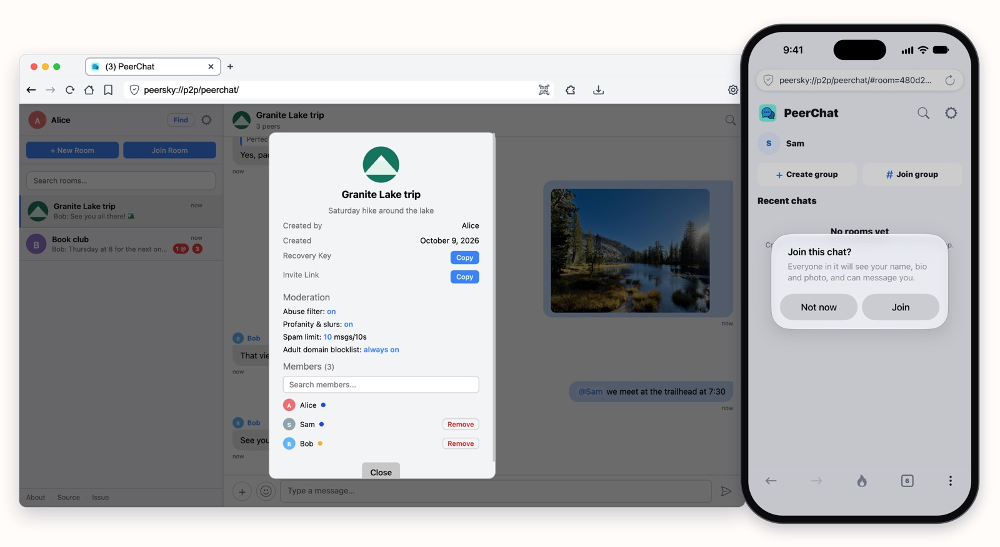

PeerChat is the chat app in PeerSky, on your computer and on your phone. There's no account, no phone number and no server. Pick a name, make a room and send its invite link in any app, or as a QR code from peersky.p2plabs.xyz/peerchat. The invite carries the room's key, so send it only to the people you want in the room.
It's for anyone who'd rather their conversations didn't go through a company: friends planning a trip, a family group, a club or a class, a team on the same Wi-Fi. You don't give a phone number, so nothing ties the chat to it. Messages travel encrypted and straight between devices, a bit like a private tunnel between you and the people in the room, and no company keeps a copy to leak, sell or hand over. When the internet goes down, people on the same Wi-Fi keep talking.
One thing to know: devices connect to each other directly, so people in a room can see your IP address, as in any peer-to-peer app. If you'd rather they didn't, turn on a VPN that allows peer-to-peer connections.
Most chat apps run through a server. It delivers every message, keeps the history, knows who's who and enforces the rules. PeerChat has no server, so the devices in a room do all of that between themselves.
You need PeerSky on each device. Get it for your computer and your phone at peersky.p2plabs.xyz.

What a server does, and what PeerChat does instead
Take the server out of a chat app and its jobs don't go away. Someone still has to find people, let them in, carry the messages and keep the history. In PeerChat, the devices in the room share those jobs.
Finding each other
With a serverIt knows who's online and connects them.
In PeerChatDevices find each other on HyperDHT, a public peer-to-peer network, by a code made from the room's key that opens nothing, then connect directly. On the same Wi-Fi, they find each other with mDNS, no internet needed.
Letting people in
With a serverIt checks your password.
In PeerChatA device proves it holds the room's key before it gets anything. The proof only works on that one connection, so it can't be copied.
Delivering messages
With a serverEvery message goes up to it, then down to everyone.
In PeerChatMessages go straight between devices. In a big room, each device passes new messages on, so they reach people the writer never connected to.
Proving who wrote it
With a serverIt vouches for the sender, because they logged in.
In PeerChatEvery message is signed with its writer's key, and every device checks the signature. Nobody can fake a message, or change one they pass on.
Keeping the history
With a serverIt stores everyone's messages.
In PeerChatThe devices in a room keep its history, sealed, and share it with each other. In new rooms, someone who joins reads from the hour they joined.
Moderation
With a serverIt bans people and filters messages for everyone.
In PeerChatEvery device runs the room's filters and limits itself. A removal signed by the room's creator is passed on until it reaches everyone.
Staying up
With a serverWhen it goes down, nobody can chat.
In PeerChatA room works as long as two people in it are online. On the same Wi-Fi, it works without internet.
How a message crosses a big room
Say Sam writes to a room that Bob and Alice are in. The message is sealed on Sam's phone before it goes anywhere, and it's only opened on the devices of the people in the room.
The room's key only travels in the invite you send. Devices prove they have it without sending it.
A device keeps up to 64 connections, so in a big room most people aren't connected to each other. Each device passes every new message on once, to the others it's connected to in the room. A copy it has already seen stops there, so a message crosses the whole room in a few steps.
Every message carries its writer's signature. Alice's laptop checks it before it shows Sam's message, so it knows Sam wrote it and that nobody changed it on the way, whoever passed it on.
Limits count per writer, not per connection. Each person gets the room's spam limit wherever their messages come from, so a device passing on a busy room is never blamed for what others wrote.
A new key every hour
New rooms change their lock every hour. Each hour's messages are sealed with a new key, made from the one before it, and there's no way to work back to an earlier one.
Joining gets you this hour's key and every one after it, never an earlier one.
So someone who joins later, or gets hold of a forwarded invite, can't read anything from the hours before they arrived. If a phone is lost, move to a new room, since a key still opens every hour after its own.
New rooms are the ones made with PeerSky Mobile 0.1.2 and the desktop release that comes with it. Older versions can't open them, so update PeerSky on every device. Rooms made before, P2P Republic among them, keep one key, so every version can still read them.
Moderation
With no server to do it, every device enforces the room's rules itself. Whoever makes a room picks them: an abuse filter, a filter for profanity and slurs, and a spam limit. Links to adult sites are always blocked. The rules are fixed once the room is made, and they show in the room's info.
Each device checks what it sends and what it receives. A message that breaks the rules is stopped before it's sent, and checked again on every device that receives it. Pictures are checked the same way, on the device that sends them and on every device that gets them. Someone who keeps breaking the rules gets a warning, then is shut out of the room for a while.
The person who made the room can remove someone. The removal is signed with their key and passed on like a message, so it reaches every device in the room, even ones that never connected to them, and every device refuses that person's messages from then on. Anyone can also block someone, or report them.
No internet, same Wi-Fi
Every room is joined twice: on HyperDHT across the internet, and on a separate swarm on your local network that devices find with mDNS, using our hyperdht-mdns. The local one needs no public server to start from, so with the internet down, everyone on the same Wi-Fi keeps chatting. It needs a network, not an internet connection. We tried it by pulling the cable out of our modem, and the chat on our Wi-Fi kept going.
For the technical details, read:
- the PeerChat README, on keys, signatures, passing messages on and moderation
- PeerChat on mobile, for the same rules on the phone
- Link Device, for one profile on all your devices
- the privacy policies for desktop and mobile
Try it with the people you already talk to. Get PeerSky at peersky.p2plabs.xyz, then come say hi in P2P Republic, our public room.